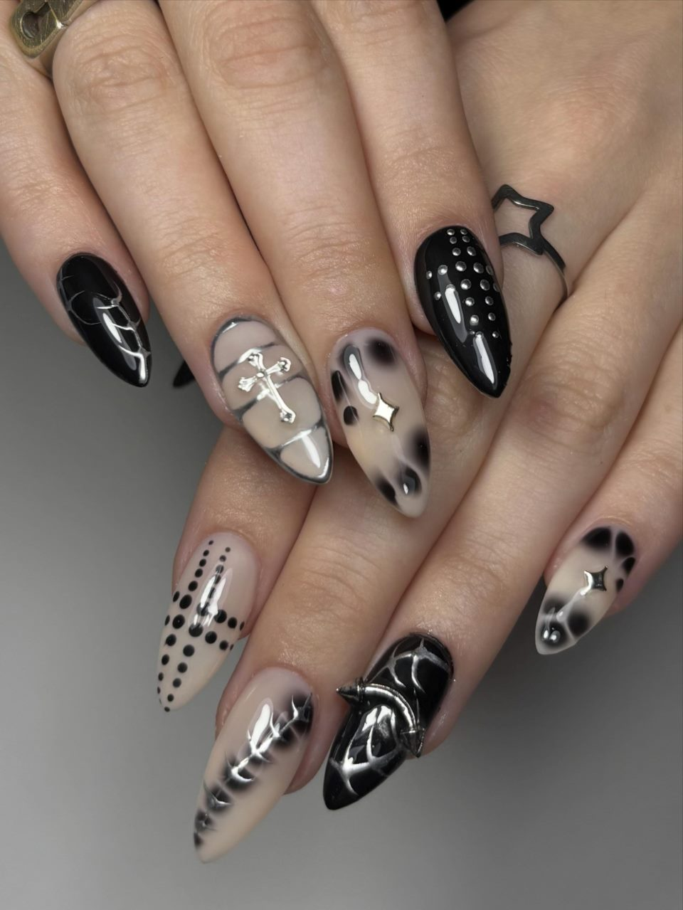
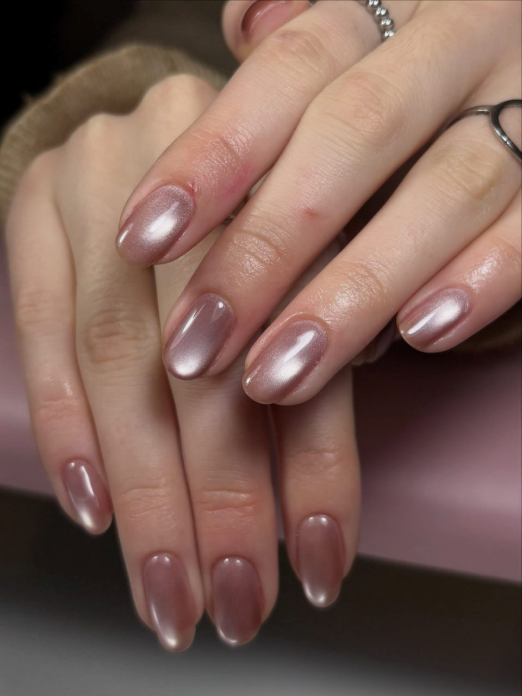

Uñas a tu medida en La Plata
Soy Rena Illiano y hago cada set a mano en mi estudio de zona Plaza Belgrano: semipermanente, capping, soft gel y press on, con el diseño que tengas en mente.
Trabajos recientes
Gatitos en 3D, cromados, cruces de strass, aura y ojo de gato. Si lo imaginás, lo diseñamos.
-

-

-

-

-

- Más de 280 trabajos en @astra.unias
Servicios
Todos se pueden combinar con diseño: cromados, strass, dibujos a mano y apliques en 3D.
Los precios están en el catálogo. Pedímelo por mensaje.
-
Semipermanente
Esmalte en gel sobre tu uña natural. Brillo intenso que dura semanas sin descascararse.
-
Capping
Una capa de gel que protege la uña natural y la ayuda a crecer más fuerte.
-
Soft gel
Extensiones con tips de gel suave. Elegís el largo y la forma: almendra, cuadrada, stiletto.
-
Press on
Sets hechos a la medida de tus uñas para poner y sacar en casa cuando quieras.

Hola, soy Rena
Soy Rena Illiano, manicurista en La Plata. Armé Astra para hacer uñas que se sientan tuyas: me traés una idea, una foto o solo un color, y lo convertimos en tu set.
Trabajo con turnos, así que cada clienta tiene su tiempo y toda mi atención. Me encantan los detalles: un gatito en relieve, una cruz de strass o un cromado perfecto.
Opiniones de clientas
-
Le mostré una foto de Pinterest y me las hizo todavía más lindas. Me duraron impecables hasta el siguiente turno.
Nombre de la clienta -
Tenía las uñas muy débiles y con el capping por fin me crecieron. Rena te explica todo y es súper detallista.
Nombre de la clienta -
Los gatitos en 3D son una locura, todo el mundo me pregunta dónde me las hice.
Nombre de la clienta
Cómo pedir tu turno
Atiendo en zona Plaza Belgrano, La Plata. La dirección exacta te la paso cuando confirmamos el turno.
-
Escribime por Instagram
Contame qué servicio querés y mandame una foto de referencia si tenés.
-
Elegimos diseño y día
Te paso el precio y los horarios disponibles.
-
Venís al estudio
Llegá con las uñas sin esmaltar, o avisame si tenés que retirar un trabajo anterior.